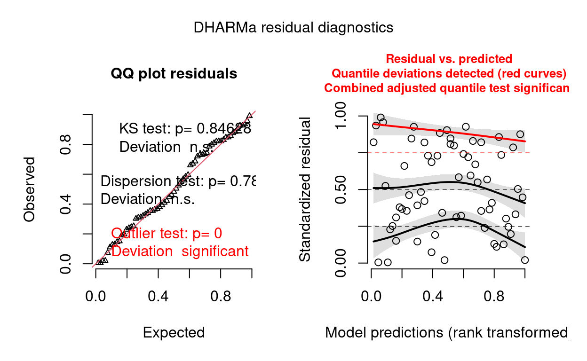
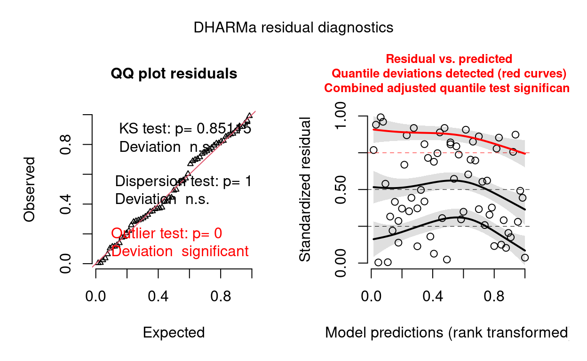
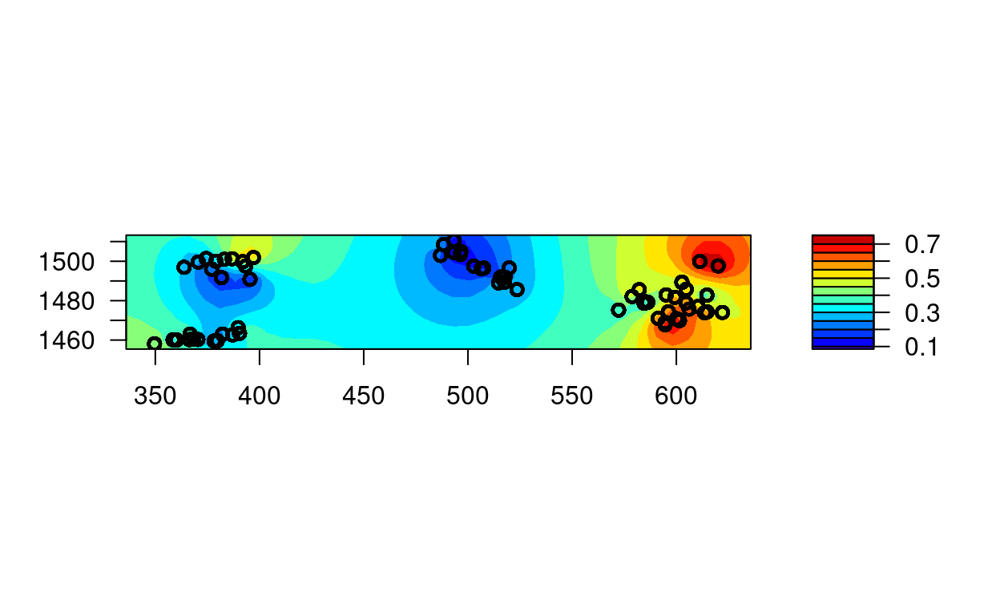
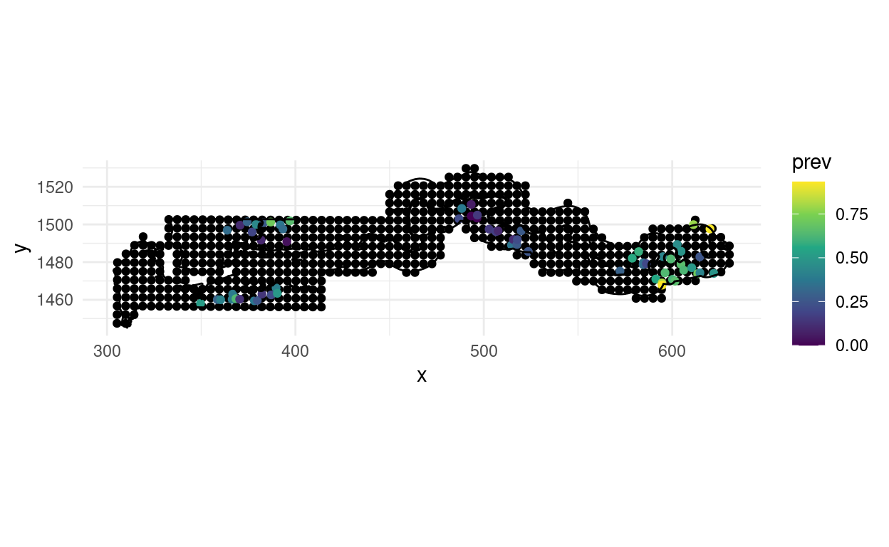
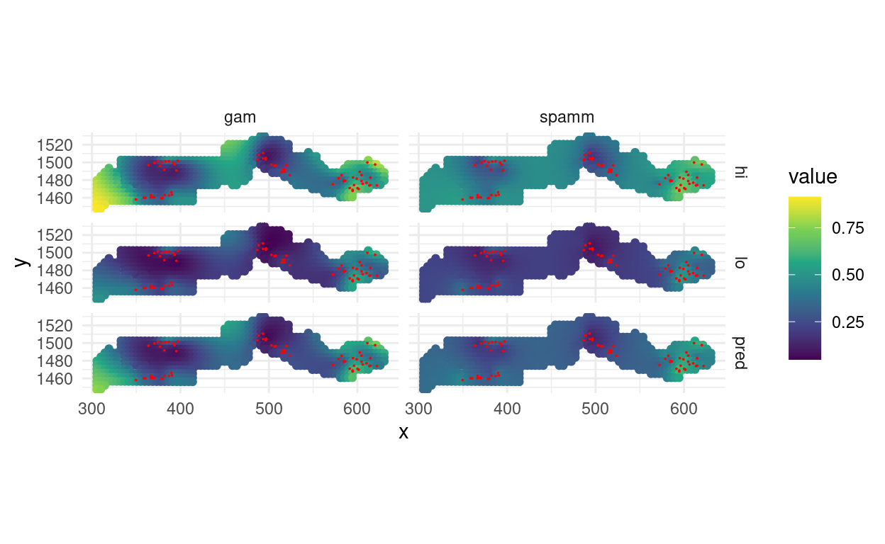
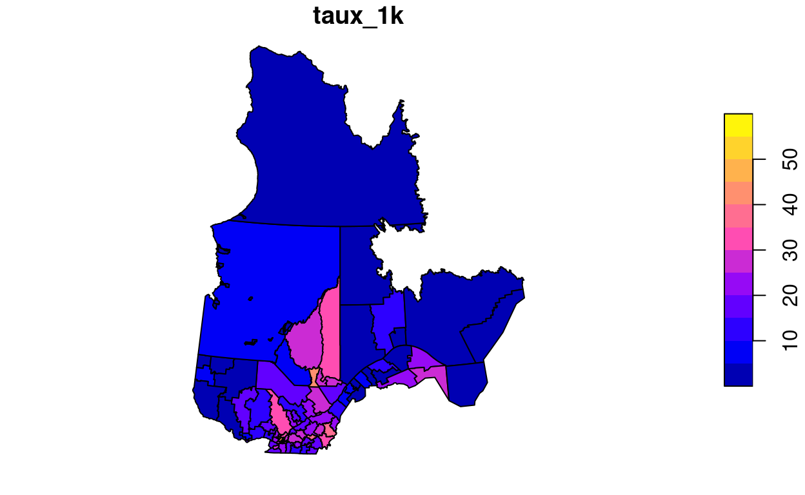

GLMM with spatial Gaussian process
Data
The gambia dataset found in the geoR package presents the results of a study of malaria prevalence among children of 65 villages in The Gambia. We will use a slightly transformed version of the data found in the file gambia.csv.
id_village x y pos age netuse treated green phc
1 1 349.6313 1458.055 1 1783 0 0 40.85 1
2 1 349.6313 1458.055 0 404 1 0 40.85 1
3 1 349.6313 1458.055 0 452 1 0 40.85 1
4 1 349.6313 1458.055 1 566 1 0 40.85 1
5 1 349.6313 1458.055 0 598 1 0 40.85 1
6 1 349.6313 1458.055 1 590 1 0 40.85 1Here are the fields in that dataset:
- id_village: Identifier of the village.
- x and y: Spatial coordinates of the village (in kilometers, based on UTM coordinates).
- pos: Binary response, whether the child tested positive for malaria.
- age: Age of the child in days.
- netuse: Whether or not the child sleeps under a bed net.
- treated: Whether or not the bed net is treated.
- green: Remote sensing based measure of greenness of vegetation (measured at the village level).
- phc: Presence or absence of a public health centre for the village.
We can count the number of positive cases and total children tested by village to map the fraction of positive cases (or prevalence, prev).
# Create village-level dataset
gambia_agg <- group_by(gambia, id_village, x, y, green, phc) %>%
summarize(pos = sum(pos), total = n()) %>%
mutate(prev = pos / total) %>%
ungroup()
head(gambia_agg)
# A tibble: 6 x 8
id_village x y green phc pos total prev
<int> <dbl> <dbl> <dbl> <int> <int> <int> <dbl>
1 1 350. 1458. 40.8 1 17 33 0.515
2 2 359. 1460. 40.8 1 19 63 0.302
3 3 360. 1460. 40.1 0 7 17 0.412
4 4 364. 1497. 40.8 0 8 24 0.333
5 5 366. 1460. 40.8 0 10 26 0.385
6 6 367. 1463. 40.8 0 7 18 0.389ggplot(gambia_agg, aes(x = x, y = y)) +
geom_point(aes(color = prev)) +
geom_path(data = gambia.borders, aes(x = x / 1000, y = y / 1000)) +
coord_fixed() +
theme_minimal() +
scale_color_viridis_c()

We use the gambia.borders dataset from the geoR package to trace the country boundaries with geom_path. Since those boundaries are in meters, we divide by 1000 to get the same scale as our points. We also use coord_fixed to ensure a 1:1 aspect ratio between the axes and use the viridis color scale, which makes it easier to visualize a continuous variable compared with the default gradient scale in ggplot2.
Based on this map, there seems to be spatial correlation in malaria prevalence, with the eastern cluster of villages showing more high prevalence values (yellow-green) and the middle cluster showing more low prevalence values (purple).
Non-spatial GLMM
For this first example, we will ignore the spatial aspect of the data and model the presence of malaria (pos) as a function of the use of a bed net (netuse) and the presence of a public health centre (phc). Since we have a binary response, we need to use a logistic regression model (a GLM). Since we have predictors at both the individual and village level, and we expect that children of the same village have more similar probabilities of having malaria even after accounting for those predictors, we need to add a random effect of the village. The result is a GLMM that we fit using the glmer function in the lme4 package.
library(lme4)
mod_glmm <- glmer(pos ~ netuse + phc + (1 | id_village),
data = gambia, family = binomial)
summary(mod_glmm)
Generalized linear mixed model fit by maximum likelihood (Laplace
Approximation) [glmerMod]
Family: binomial ( logit )
Formula: pos ~ netuse + phc + (1 | id_village)
Data: gambia
AIC BIC logLik deviance df.resid
2428.0 2450.5 -1210.0 2420.0 2031
Scaled residuals:
Min 1Q Median 3Q Max
-2.1286 -0.7120 -0.4142 0.8474 3.3434
Random effects:
Groups Name Variance Std.Dev.
id_village (Intercept) 0.8149 0.9027
Number of obs: 2035, groups: id_village, 65
Fixed effects:
Estimate Std. Error z value Pr(>|z|)
(Intercept) 0.1491 0.2297 0.649 0.5164
netuse -0.6044 0.1442 -4.190 2.79e-05 ***
phc -0.4985 0.2604 -1.914 0.0556 .
---
Signif. codes: 0 '***' 0.001 '**' 0.01 '*' 0.05 '.' 0.1 ' ' 1
Correlation of Fixed Effects:
(Intr) netuse
netuse -0.422
phc -0.715 -0.025According to these results, both netuse and phc result in a decrease of malaria prevalence, although the effect of phc is not significant at a threshold \(\alpha = 0.05\). The intercept (0.149) is the logit of the probability of malaria presence for a child with no bednet and no public health centre, but it is the mean intercept across all villages, and there is a lot of variation between villages, based on the random effect standard deviation of 0.90. We can get the estimated intercept for each village with the function coef:
(Intercept) netuse phc
1 0.93727515 -0.6043602 -0.4984835
2 0.09204843 -0.6043602 -0.4984835
3 0.22500620 -0.6043602 -0.4984835
4 -0.46271089 -0.6043602 -0.4984835
5 0.13680037 -0.6043602 -0.4984835
6 -0.03723346 -0.6043602 -0.4984835So for example, the intercept for village 1 is around 0.94, equivalent to a probability of 72%:
plogis(0.937)
[1] 0.7184933while the intercept in village 2 is equivalent to a probability of 52%:
plogis(0.092)
[1] 0.5229838The DHARMa package provides a general method for checking whether the residuals of a GLMM are distributed according to the specified model and whether there is any residual trend. The package works by simulating replicates of each observation according to the fitted model and then determining a “standardized residual”, which is the relative position of the observed value with respect to the simulated values, e.g. 0 if the observation is smaller than all the simulations, 0.5 if it is in the middle, etc. If the model represents the data well, each value of the standardized residual between 0 and 1 should be equally likely, so the standardized residuals should produce a uniform distribution between 0 and 1.
The simulateResiduals function performs the calculation of the standardized residuals, then the plot function plots the diagnostic graphs with the results of certain tests.
library(DHARMa)
res_glmm <- simulateResiduals(mod_glmm)
plot(res_glmm)

The graph on the left is a quantile-quantile plot of standardized residuals. The results of three statistical tests also also shown: a Kolmogorov-Smirnov (KS) test which checks whether there is a deviation from the theoretical distribution, a dispersion test that checks whether there is underdispersion or overdispersion, and an outlier test based on the number of residuals that are more extreme than all the simulations. Here, we get a significant result for the outliers, though the message indicates that this result might have an inflated type I error rate in this case.
On the right, we generally get a graph of standardized residuals (in y) as a function of the rank of the predicted values, in order to check for any leftover trend in the residual. Here, the predictions are binned by quartile, so it might be better to instead aggregate the predictions and residuals by village, which we can do with the recalculateResiduals function.
plot(recalculateResiduals(res_glmm, group = gambia$id_village))

The plot to the right now shows individual points, along with a quantile regression for the 1st quartile, the median and the 3rd quartile. In theory, these three curves should be horizontal straight lines (no leftover trend in the residuals vs. predictions). The curve for the 3rd quartile (in red) is significantly different from a horizontal line, which could indicate some systematic effect that is missing from the model.
Spatial GLMM with spaMM
The spaMM (spatial mixed models) package is a relatively new R package that can perform approximate maximum likelihood estimation of parameters for GLMM with spatial dependence, modelled either as a Gaussian process or with a CAR (we will see the latter in the last section). The package implements different algorithms, but there is a single fitme function that chooses the appropriate algorithm for each model type. For example, here is the same (non-spatial) model as above fit with spaMM.
library(spaMM)
mod_spamm_glmm <- fitme(pos ~ netuse + phc + (1 | id_village),
data = gambia, family = binomial)
summary(mod_spamm_glmm)
formula: pos ~ netuse + phc + (1 | id_village)
Estimation of lambda by Laplace ML approximation (p_v).
Estimation of fixed effects by Laplace ML approximation (p_v).
family: binomial( link = logit )
------------ Fixed effects (beta) ------------
Estimate Cond. SE t-value
(Intercept) 0.1491 0.2287 0.6519
netuse -0.6045 0.1420 -4.2567
phc -0.4986 0.2593 -1.9231
--------------- Random effects ---------------
Family: gaussian( link = identity )
--- Variance parameters ('lambda'):
lambda = var(u) for u ~ Gaussian;
id_village : 0.8151
--- Coefficients for log(lambda):
Group Term Estimate Cond.SE
id_village (Intercept) -0.2045 0.2008
# of obs: 2035; # of groups: id_village, 65
------------- Likelihood values -------------
logLik
p_v(h) (marginal L): -1210.016Note that the estimates of the fixed effects as well as the variance of random effects are nearly identical to those obtained by glmer above.
We can now use spaMM to fit the same model with the addition of spatial correlations between villages. In the formula of the model, this is represented as a random effect Matern(1 | x + y), which means that the intercepts are spatially correlated between villages following a Matérn correlation function of coordinates (x, y). The Matérn function is a flexible function for spatial correlation that includes a shape parameter \(\nu\) (nu), so that when \(\nu = 0.5\) it is equivalent to the exponential correlation but as \(\nu\) grows to large values, it approaches a Gaussian correlation. We could let the function estimate \(\nu\), but here we will fix it to 0.5 with the fixed argument of fitme.
mod_spamm <- fitme(pos ~ netuse + phc + Matern(1 | x + y) + (1 | id_village),
data = gambia, family = binomial, fixed = list(nu = 0.5))
summary(mod_spamm)
formula: pos ~ netuse + phc + Matern(1 | x + y) + (1 | id_village)
Estimation of lambda and corrPars by Laplace ML approximation (p_v).
Estimation of fixed effects by Laplace ML approximation (p_v).
family: binomial( link = logit )
------------ Fixed effects (beta) ------------
Estimate Cond. SE t-value
(Intercept) 0.06861 0.3351 0.2047
netuse -0.51719 0.1407 -3.6758
phc -0.44416 0.2052 -2.1648
--------------- Random effects ---------------
Family: gaussian( link = identity )
--- Correlation parameters:
1.nu 1.rho
0.50000000 0.05128915
--- Variance parameters ('lambda'):
lambda = var(u) for u ~ Gaussian;
x + y : 0.6421
id_village : 0.1978
--- Coefficients for log(lambda):
Group Term Estimate Cond.SE
x + y (Intercept) -0.443 0.2919
id_village (Intercept) -1.62 0.3166
# of obs: 2035; # of groups: x + y, 65; id_village, 65
------------- Likelihood values -------------
logLik
p_v(h) (marginal L): -1197.968Let’s first check the random effects of the model. The spatial correlation function has a parameter rho equal to 0.0513. This parameter in spaMM is the inverse of the range, so here the range of exponential correlation is 1/0.0513 or around 19.5 km. There are now two variance prameters, the one identified as x + y is the long-range variance (i.e. sill) for the exponential correlation model whereas the one identified as id_village shows the non-spatially correlated portion of the variation between villages.
In fact, while we left the random effects (1 | id_village) in the formula to represent the non-spatial portion of variation between villages, we could also represent this with a nugget effect in the geostatistical model. In both cases, it would represent the idea that even two villages very close to each other would have different baseline prevalences in the model.
By default, the Matern function has no nugget effect, but we can add one by specifying a non-zero Nugget in the initial parameter list init.
mod_spamm2 <- fitme(pos ~ netuse + phc + Matern(1 | x + y),
data = gambia, family = binomial, fixed = list(nu = 0.5),
init = list(Nugget = 0.1))
summary(mod_spamm2)
formula: pos ~ netuse + phc + Matern(1 | x + y)
Estimation of lambda and corrPars by Laplace ML approximation (p_v).
Estimation of fixed effects by Laplace ML approximation (p_v).
family: binomial( link = logit )
------------ Fixed effects (beta) ------------
Estimate Cond. SE t-value
(Intercept) 0.06861 0.3352 0.2047
netuse -0.51719 0.1407 -3.6758
phc -0.44416 0.2052 -2.1648
--------------- Random effects ---------------
Family: gaussian( link = identity )
--- Correlation parameters:
1.nu 1.Nugget 1.rho
0.50000000 0.23551424 0.05128739
--- Variance parameters ('lambda'):
lambda = var(u) for u ~ Gaussian;
x + y : 0.8399
--- Coefficients for log(lambda):
Group Term Estimate Cond.SE
x + y (Intercept) -0.1744 0.2146
# of obs: 2035; # of groups: x + y, 65
------------- Likelihood values -------------
logLik
p_v(h) (marginal L): -1197.968As you can see, all estimates are the same, except that the variance of the spatial portion (sill) is now 0.84 and the nugget is equal to a fraction 0.235 of that sill, so a variance of 0.197, which is the same as the id_village random effect in the version above. Thus the two formulations are equivalent.
Now, recall the coefficients we obtained for the non-spatial GLMM:
summary(mod_glmm)$coefficients
Estimate Std. Error z value Pr(>|z|)
(Intercept) 0.1490596 0.2297164 0.6488855 5.164124e-01
netuse -0.6043602 0.1442451 -4.1898129 2.791846e-05
phc -0.4984835 0.2604289 -1.9140866 5.560909e-02In the spatial version, both fixed effects have moved slightly towards zero, but the standard error of the effect of phc has decreased. It is interesting that the inclusion of spatial dependence has allowed us to estimate more precisely the effect of having a public health centre in the village. This would not always be the case: for a predictor that is also strongly correlated in space, spatial correlation in the response makes it harder to estimate the effect of this predictor, since it is confounded with the spatial effect. However, for a predictor that is not correlated in space, including the spatial effect reduces the residual (non-spatial) variance and may thus increase the precision of the predictor’s effect.
The spaMM package is also compatible with DHARMa for residual diagnostics. (You can in fact ignore the warning that it is not in the class of supported models, this is due to using the fitme function rather than a specific algorithm function in spaMM.)
res_spamm <- simulateResiduals(mod_spamm2)
plot(res_spamm)

plot(recalculateResiduals(res_spamm, group = gambia$id_village))

Finally, while we will show how to make and visualize spatial predictions below, we can produce a quick map of the estimated spatial effects in a spaMM model with the filled.mapMM function.
filled.mapMM(mod_spamm2)

Gaussian process models vs. smoothing splines
If you are familiar with generalized additive models (GAM), you might think that the spatial variation in malaria prevalence (as shown in the map above) could be represented by a 2D smoothing spline (as a function of \(x\) and \(y\)) within a GAM.
The code below fits the GAM equivalent of our Gaussian process GLMM above with the gam function in the mgcv package. The spatial effect is represented by the 2D spline s(x, y) whereas the non-spatial random effect of village is represented by s(id_village, bs = "re"), which is the same as (1 | id_village) in the previous models. Note that for the gam function, categorical variables must be explicitly converted to factors.
To visualize the 2D spline, we will use the gratia package.

Note that the plot of the spline s(x, y) (top right) does not extend too far from the locations of the data (other areas are blank). In this graph, we can also see that the village random effects follow the expected Gaussian distribution (top left).
Next, we will use both the spatial GLMM from the previous section and this GAMM to predict the mean prevalence on a spatial grid of points contained in the file gambia_pred.csv. The graph below adds those prediction points (in black) on the previous map of the data points.
gambia_pred <- read.csv("data/gambia_pred.csv")
ggplot(gambia_agg, aes(x = x, y = y)) +
geom_point(data = gambia_pred) +
geom_point(aes(color = prev)) +
geom_path(data = gambia.borders, aes(x = x / 1000, y = y / 1000)) +
coord_fixed() +
theme_minimal() +
scale_color_viridis_c()

To make predictions from the GAMM model at those points, the code below goes through the following steps:
All predictors in the model must be in the prediction data frame, so we add constant values of netuse and phc (both equal to 1) for all points. Thus, we will make predictions of malaria prevalence in the case where a net is used and a public health centre is present. We also add a constant id_village, although it will not be used in predictions (see below).
We call the
predictfunction on the output ofgamto produce predictions at the new data points (argumentnewdata), including standard errors (se.fit = TRUE) and excluding the village random effects, so the prediction is made for an “average village”. The resulting objectgam_predwill have columnsfit(mean prediction) andse.fit(standard error). Those predictions and standard errors are on the link (logit) scale.We add the original prediction data frame to
gam_predwithcbind.We add columns for the mean prediction and 50% confidence interval boundaries (mean \(\pm\) 0.674 standard error), converted from the logit scale to the probability scale with
plogis. We choose a 50% interval since a 95% interval may be too wide here to contrast the different predictions on the map at the end of this section.
gambia_pred <- mutate(gambia_pred, netuse = 1, phc = 1, id_village = 1)
gam_pred <- predict(mod_gam, newdata = gambia_pred, se.fit = TRUE,
exclude = "s(id_village)")
gam_pred <- cbind(gambia_pred, as.data.frame(gam_pred))
gam_pred <- mutate(gam_pred, pred = plogis(fit),
lo = plogis(fit - 0.674 * se.fit), # 50% CI
hi = plogis(fit + 0.674 * se.fit))
Note: The reason we do not make predictions directly on the probability (response) scale is that the normal formula for confidence intervals applies more accurately on the logit scale. Adding a certain number of standard errors around the mean on the probability scale would lead to less accurate intervals and maybe even confidence intervals outside the possible range (0, 1) for a probability.
We apply the same strategy to make predictions from the spaMM spatial GLMM model. There are a few differences in the predict method compared with the GAMM case.
The argument
binding = "fit"means that mean predictions (fitcolumn) will be attached to the prediction dataset and returned asspamm_pred.The
variances = list(linPred = TRUE)tellspredictto calculate the variance of the linear predictor (so the square of the standard error). However, it appears as an attributepredVarin the output data frame rather than ase.fitcolumn, so we move it to a column on the next line.
Finally, we combine both sets of predictions as different rows of a pred_all dataset with bind_rows. The name of the dataset each prediction originates from (gam or spamm) will appear in the “model” column (argument .id). To simplify production of the next plot, we then use pivot_longer in the tidyr package to change the three columns “pred”, “lo” and “hi” to two columns, “stat” and “value” (pred_tall has thus three rows for every row in pred_all).
pred_all <- bind_rows(gam = gam_pred, spamm = spamm_pred, .id = "model")
library(tidyr)
pred_tall <- pivot_longer(pred_all, c(pred, lo, hi), names_to = "stat",
values_to = "value")
Having done these steps, we can finally look at the prediction maps (mean, lower and upper bounds of the 50% confidence interval) with ggplot. The original data points are shown in red.
ggplot(pred_tall, aes(x = x, y = y)) +
geom_point(aes(color = value)) +
geom_point(data = gambia_agg, color = "red", size = 0) +
coord_fixed() +
facet_grid(stat~model) +
scale_color_viridis_c() +
theme_minimal()

While both models agree that there is a higher prevalence near the eastern cluster of villages, the GAMM also estimates a higher prevalence at a few points (western edge and around the center) where there is no data. This is an artifact of the shape of the spline fit around the data points, since a spline is meant to fit a global, although nonlinear, trend. In contrast, the geostatistical model represents the spatial effect as local correlations and reverts to the overall mean prevalence when far from any data points, which is a safer assumption. This is one reason to choose a geostatistical / Gaussian process model in this case.
Bayesian methods for GLMMs with Gaussian processes
Bayesian models provide a flexible framework to express models with complex dependence structure among the data, including spatial dependence. However, fitting a Gaussian process model with a fully Bayesian approach can be slow, due the need to compute a spatial covariance matrix between all point pairs at each iteration.
The INLA (integrated nested Laplace approximation) method performs an approximate calculation of the Bayesian posterior distribution, which makes it suitable for spatial regression problems. We do not cover it in this course, but I recommend the textbook by Paula Moraga (in the references section below) that provides worked examples of using INLA for various geostatistical and areal data models, in the context of epidemiology, including models with both space and time dependence. The book presents the same Gambia malaria data as an example of a geostatistical dataset, which inspired its use in this course.
GLMM with spatial autoregression
We return to the last example of the previous part, where we modelled the rate of COVID-19 cases (cases / 1000) for administrative health network divisions (RLS) in Quebec as a function of their population density. The rate is given by the “taux_1k” column in the rls_covid shapefile.
library(sf)
rls_covid <- read_sf("data/rls_covid.shp")
rls_covid <- rls_covid[!is.na(rls_covid$dens_pop), ]
plot(rls_covid["taux_1k"])

Previously, we modelled the logarithm of this rate as a linear function of the logarithm of population density, with the residual variance correlated among neighbouring units via a CAR (conditional autoregression) structure, as shown in the code below.
library(spdep)
library(spatialreg)
rls_nb <- poly2nb(rls_covid)
rls_w <- nb2listw(rls_nb, style = "B")
car_lm <- spautolm(log(taux_1k) ~ log(dens_pop), data = rls_covid,
listw = rls_w, family = "CAR")
summary(car_lm)
Call:
spautolm(formula = log(taux_1k) ~ log(dens_pop), data = rls_covid,
listw = rls_w, family = "CAR")
Residuals:
Min 1Q Median 3Q Max
-1.201858 -0.254084 -0.053348 0.281482 1.427053
Coefficients:
Estimate Std. Error z value Pr(>|z|)
(Intercept) 1.702068 0.168463 10.1035 < 2.2e-16
log(dens_pop) 0.206623 0.032848 6.2903 3.169e-10
Lambda: 0.15762 LR test value: 23.991 p-value: 9.6771e-07
Numerical Hessian standard error of lambda: 0.0050486
Log likelihood: -80.68953
ML residual variance (sigma squared): 0.2814, (sigma: 0.53048)
Number of observations: 95
Number of parameters estimated: 4
AIC: 169.38As a reminder, the poly2nb function in the spdep package creates a list of neighbours based on bordering polygons in a shapefile, then the nb2listw converts it to a list of weights, here binary weights (style = "B") so that each bordering region receives the same weight of 1 in the autoregressive model.
Instead of using the rates, it would be possible to model the cases directly (column “cas” in the dataset) with a Poisson regression, which is appropriate for count data. To account for the fact that if the risk per person were equal, cases would be proportional to population, we can add the unit’s population pop as an offset in the Poisson regression. Therefore, the model would look like: cas ~ log(dens_pop) + offset(log(pop)). Note that since the Poisson regression uses a logarithmic link, that model with log(pop) as an offset assumes that log(cas / pop) (so the log rate) is proportional to log(dens_pop), just like the linear model above, but it has the advantage of modelling the stochasticity of the raw data (the number of cases) directly with a Poisson distribution.
We do not have the population in this data, but we can estimate it from the cases and the rate (cases / 1000) as follows:
rls_covid$pop <- rls_covid$cas / rls_covid$taux_1k * 1000
To define a CAR model in spaMM, we need a weights matrix rather than a list of weights as in the spatialreg package. Fortunately, the spdep package also includes a function nb2mat to convert the neighbours list to a matrix of weights, here again using binary weights. To avoid a warning, we specify the row and column names of that matrix to be equal to the IDs associated with each unit (RLS_code). Then, we add a term adjacency(1 | RLS_code) to the model to specify that the residual variation between different groups defined by RLS_code is spatially correlated with a CAR structure (here, each group has only one observation since we have one data point by RLS unit).
library(spaMM)
rls_mat <- nb2mat(rls_nb, style = "B")
rownames(rls_mat) <- rls_covid$RLS_code
colnames(rls_mat) <- rls_covid$RLS_code
rls_spamm <- fitme(cas ~ log(dens_pop) + offset(log(pop)) + adjacency(1 | RLS_code),
data = rls_covid, adjMatrix = rls_mat, family = poisson)
summary(rls_spamm)
formula: cas ~ log(dens_pop) + offset(log(pop)) + adjacency(1 | RLS_code)
Estimation of lambda and corrPars by Laplace ML approximation (p_v).
Estimation of fixed effects by Laplace ML approximation (p_v).
family: poisson( link = log )
------------ Fixed effects (beta) ------------
Estimate Cond. SE t-value
(Intercept) -5.1620 0.16858 -30.621
log(dens_pop) 0.1999 0.03267 6.118
--------------- Random effects ---------------
Family: gaussian( link = identity )
--- Correlation parameters:
1.rho
0.1576786
--- Variance parameters ('lambda'):
lambda = var(u) for u ~ Gaussian;
RLS_code : 0.266
--- Coefficients for log(lambda):
Group Term Estimate Cond.SE
RLS_code (Intercept) -1.324 0.1473
# of obs: 95; # of groups: RLS_code, 95
------------- Likelihood values -------------
logLik
p_v(h) (marginal L): -709.3234Note that the spatial correlation coefficient rho (0.158) is similar to the equivalent quantity in the spautolm model above, where it was called Lambda. The effect of log(dens_pop) is also approximately 0.2 in both models.
Reference
Moraga, Paula (2019) Geospatial Health Data: Modeling and Visualization with R-INLA and Shiny. Chapman & Hall/CRC Biostatistics Series. Available online at https://www.paulamoraga.com/book-geospatial/.